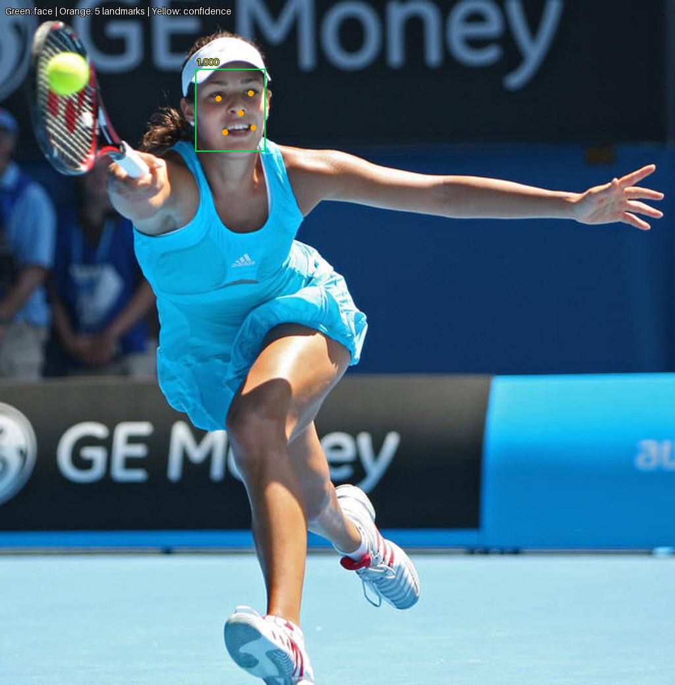
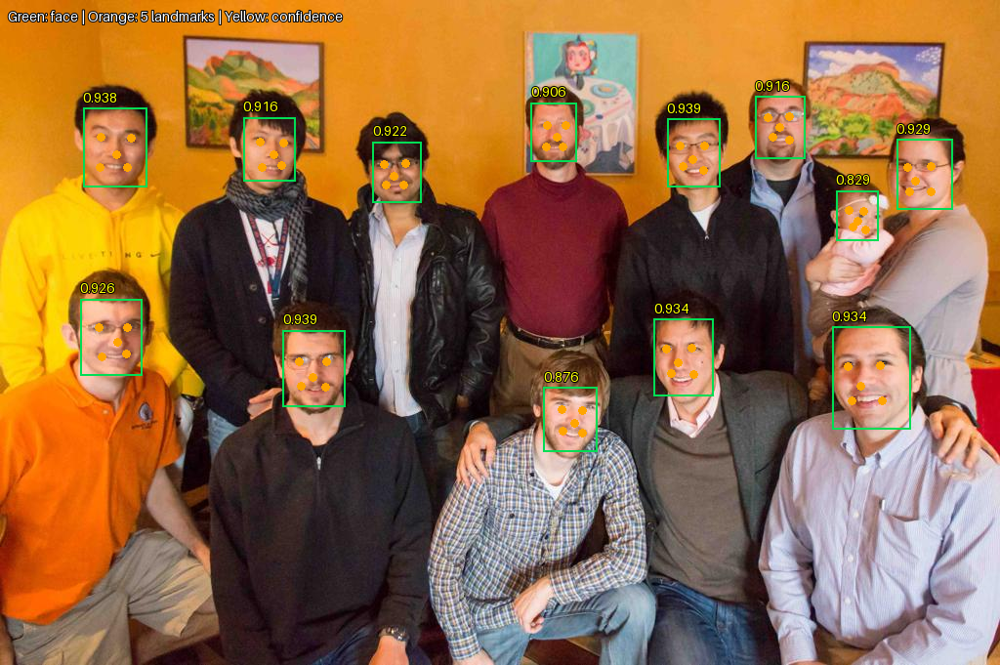
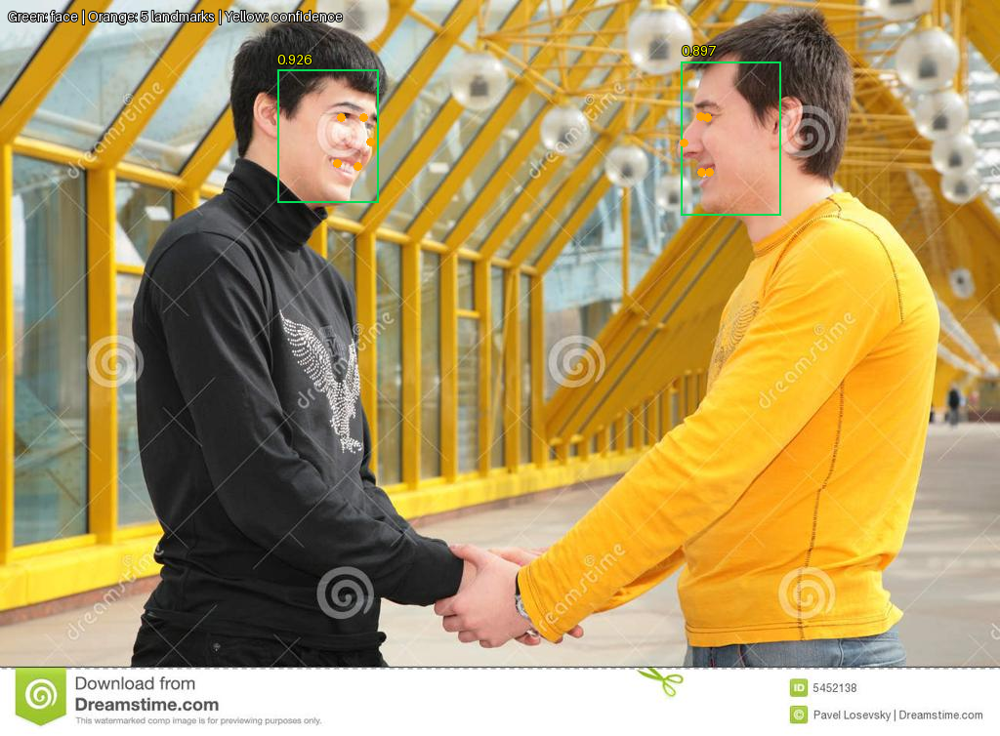
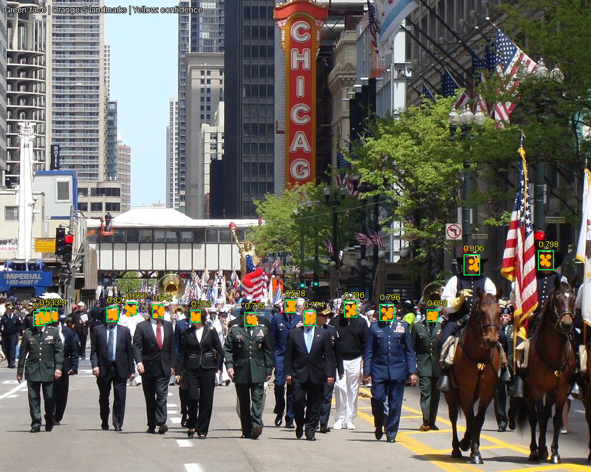
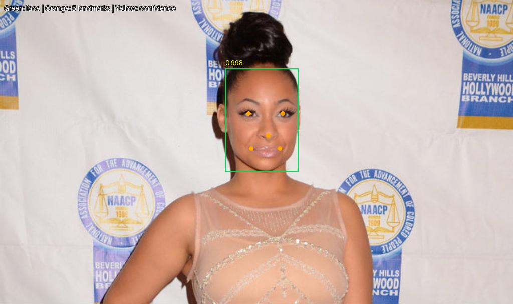
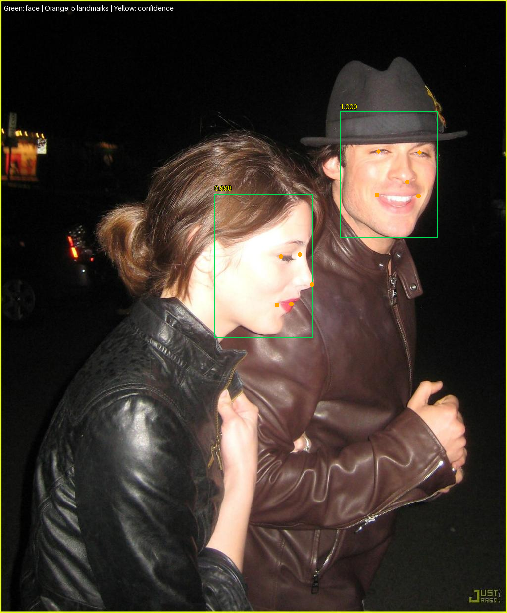
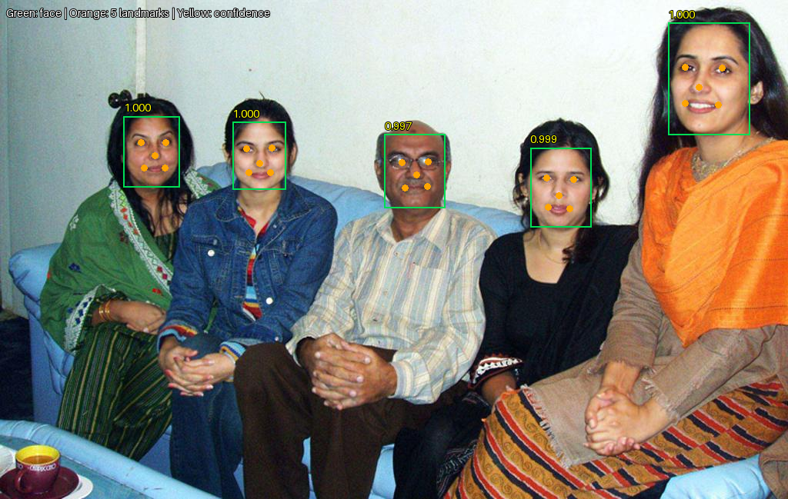
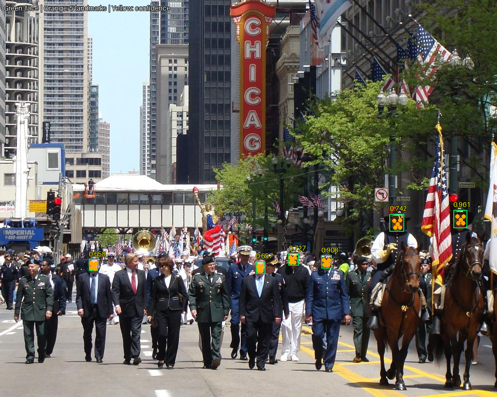

All inference results
mtcnn | 01_single_portrait.jpg | 1 faces
mtcnn | 02_single_landscape.jpg | 1 facesmtcnn | 03_two_faces_portrait.jpg | 3 facesmtcnn | 04_family_group.jpg | 5 facesmtcnn | 05_group.jpg | 13 facesmtcnn | 06_handshaking.jpg | 2 facesmtcnn | 07_crowd.jpg | 1 facesyunet | 01_single_portrait.jpg | 1 facesyunet | 02_single_landscape.jpg | 1 facesyunet | 03_two_faces_portrait.jpg | 3 facesyunet | 04_family_group.jpg | 5 facesyunet | 05_group.jpg | 13 faces
yunet | 06_handshaking.jpg | 2 faces
yunet | 07_crowd.jpg | 15 faces
retinaface_mnv1_025 | 01_single_portrait.jpg | 1 facesretinaface_mnv1_025 | 02_single_landscape.jpg | 1 faces
retinaface_mnv1_025 | 03_two_faces_portrait.jpg | 2 faces
retinaface_mnv1_025 | 04_family_group.jpg | 5 faces
retinaface_mnv1_025 | 05_group.jpg | 14 facesretinaface_mnv1_025 | 06_handshaking.jpg | 2 facesretinaface_mnv1_025 | 07_crowd.jpg | 6 faces